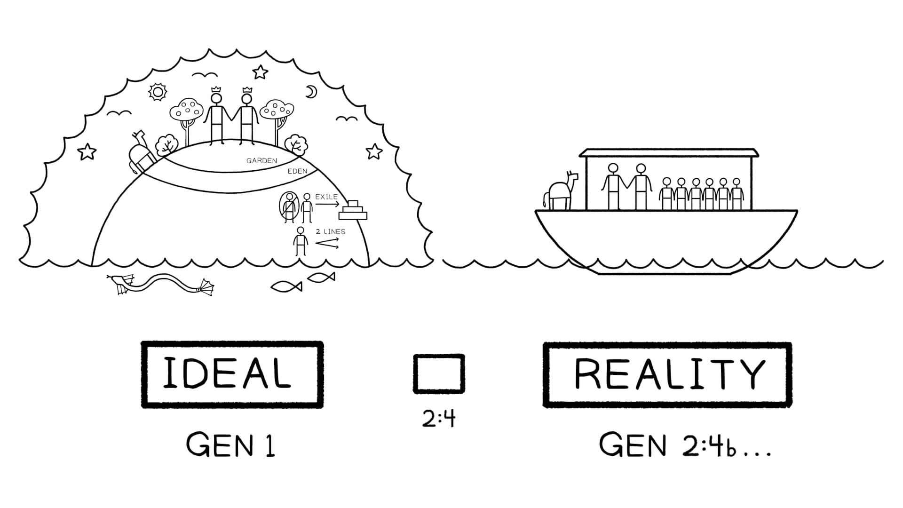

Gênesis 1 oferece o retrato ideal da criação com humanos imaginando Deus. É a configuração cósmica que precede Gênesis 2:4.Genesis 1 offers the ideal portrait of creation with humans imaging God. It is the cosmic set up that precedes Genesis 2:4.
Esse retrato dos humanos como imagem divina e real de Yahweh é precisamente a afirmação do Salmo 8, que é o produto de uma meditação sustentada sobre Gênesis 1. Gênesis 1 e a reflexão posterior no Salmo 8 nos dão toda a história da humanidade em um movimento de abertura. Ele funciona como o retrato ideal da criação, e Gênesis 2:4 é a dobradiça que nos leva à realidade.This portrait of humans as divine and royal image of Yahweh is precisely the claim of Psalm 8, which is the product of a sustained meditation on Genesis 1. Genesis 1 and the later reflection in Psalm 8 give us the whole story of humanity in one opening movement. It functions as the ideal portrait of creation, and Genesis 2:4 is the hinge that gets us into reality.
O autor de Hebreus claramente meditou tanto sobre Gênesis 1 quanto sobre o Salmo 8. Em Hebreus 2:5, o autor acena para o ideal não cumprido que foi finalmente realizado através da crucificação e ressurreição de Jesus.The author of Hebrews has clearly meditated on both Genesis 1 and Psalm 8. In Hebrews 2:5, the author nods to the unfulfilled ideal that was finally realized through the crucifixion and resurrection of Jesus.

Como Gênesis 1 e 2 se relacionam um com o outro? Como você descreveria o propósito diferente de cada capítulo?How do Genesis 1 and 2 relate to one other? How would you describe the different purpose of each chapter?